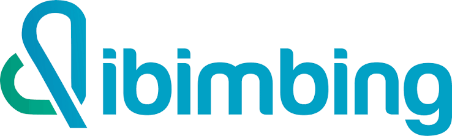
Data Analytics and Business Intelligence Weekdays 2Final
Project
Credit Risk Segmentation
Davonn Lemuel Halomoan
davonnlemuel@gmail.com+62 812-8514-4266

Data Analytics and Business Intelligence Weekdays 2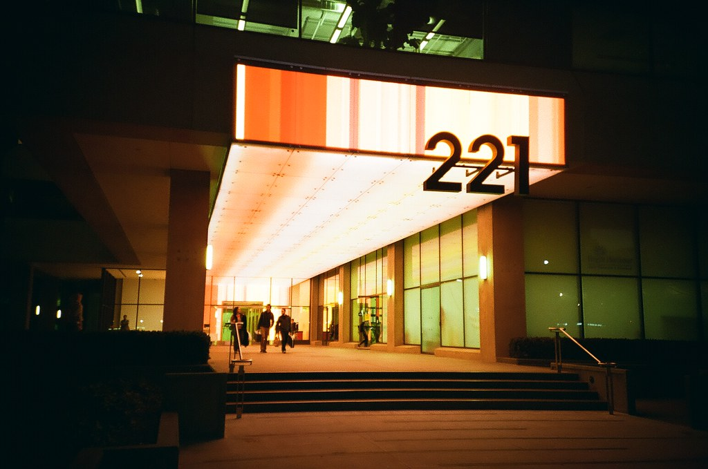
Perusahaan fintech di bidang P2P lending. Lewat Prosper.com, orang bisa mengajukan pinjaman pribadi, dan orang lain bisa berinvestasi dengan mendanai pinjaman itu.
Peer-to-peer lending adalah pinjam-meminjam uang antarorang lewat platform online, tanpa bank sebagai perantara. Platform mempertemukan peminjam dengan pemberi dana, lalu mengurus penyaluran dan penagihannya.
Biaya layanan dari peminjam saat pinjaman cair, dan dari investor selama pinjaman berjalan.
Menerima bunga, sekaligus menanggung risiko kalau peminjam macet.
Aturan main Prosper berubah di 2009, termasuk cara memberi rating. Karena itu data sebelum dan sesudah 2009 dianalisis terpisah.
Satu pinjaman biasanya didanai banyak investor sekaligus. Mediannya 1 pinjaman didanai 44 investor.
Dataset yang digunakan merupakan data nyata yang diambil dari Prosper.
| Kelompok kolom | Banyak kolom | Contoh kolom yang dipakai | Dipakai untuk |
|---|---|---|---|
| Identitas dan tanggal | 4 | ListingKeyLoanOriginationDateClosedDate | Kunci unik dan waktu |
| Detail pinjaman | 5 | LoanOriginalAmountTermListingCategory (numeric) | Produk pinjaman |
| Penilaian Prosper | 6 | ProsperRating (Alpha)BorrowerRateEstimatedLoss | Penilaian risiko dan bunga |
| Profil peminjam | 9 | StatedMonthlyIncomeDebtToIncomeRatioEmploymentStatus | Siapa peminjamnya |
| Riwayat kredit | 5 | CreditScoreRangeLowerInquiriesLast6MonthsBankcardUtilization | Kesehatan kredit di luar Prosper |
| Riwayat di Prosper | 1 | TotalProsperLoans | Peminjam baru atau lama |
| Hasil akhir | 6 | LoanStatusLP_InterestandFeesLP_NetPrincipalLoss | Lunas atau macet, untung atau rugi |
Macet: peminjam gagal membayar cicilannya, sehingga pinjaman dinyatakan gagal bayar atau dihapusbukukan.
Pada dataset, Chargedoff dan Defaulted didefinisikan sebagai Macet.
Segmen yang perlu diperketat atau dinaikkan bunganya, beserta dampaknya ke tingkat macet, volume penyaluran, dan untung investor.
Setelah 2009, macet turun separuh dan investor berbalik untung.
Perubahan sistem pada 2009 diduga ikut membuat macet berkurang dan investor lebih untung.
Merah: tingkat macet 20% ke atas
Makin tinggi skor kredit, makin jarang macet: dari 22,0% di skor 600-639 turun ke 2,5% di skor 840 ke atas.
Di rating yang sama, DTI masih membedakan macet.
| DTI 30-40% | ||
|---|---|---|
| Rating | Macet | Bunga |
| AA | 12,9% | 9,1% |
| D | 13,9% | 25,5% |
Di DTI 30-40%, peminjam rating AA memiliki risiko macet yang mendekati peminjam rating D (12,9% dan 13,9%), tetapi bunga rating AA jauh di bawah rating D (9,1% dan 25,5%).
Key pointUntung terbesar justru datang dari rating berisiko yang berpendapatan tinggi atau sudah pernah meminjam. Segmen ini bisa jadi kunci pertumbuhan Prosper.
Key pointDTI penting untuk dinilai, karena 2 dari 3 pasangan segmen paling rugi melibatkan peminjam yang DTI-nya tidak tercatat. Pinjaman tanpa DTI bisa dinilai setara rating D (macet 19,6% dan 20,8%).
9 pasangan segmen berisiko (Rating dan DTI) dari EDA.
5 pasangan segmen paling rugi dari Business Question 1.
Persen dihitung dari 1.618 macet, 8.917 lancar, dan untung bersih investor $5,32 juta di kohort.
Menolak segmen paling berisiko justru menurunkan untung investor $0,94 juta. Menolak pasangan segmen kerugian terbesar menaikkan untung, tapi hanya $9.576 (0,2%). Menolak peminjam bukan cara utama menambah untung.
Bunga sudah menutup pokok yang hilang dan biaya Prosper di semua rating, sehingga tidak ada rating yang rugi.
 Portofolio pinjaman - Dashboard Prosper.pbix−□✕
Portofolio pinjaman - Dashboard Prosper.pbix−□✕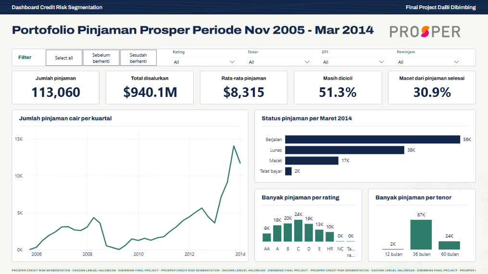
Customer Segmentation - Dashboard Prosper.pbix−□✕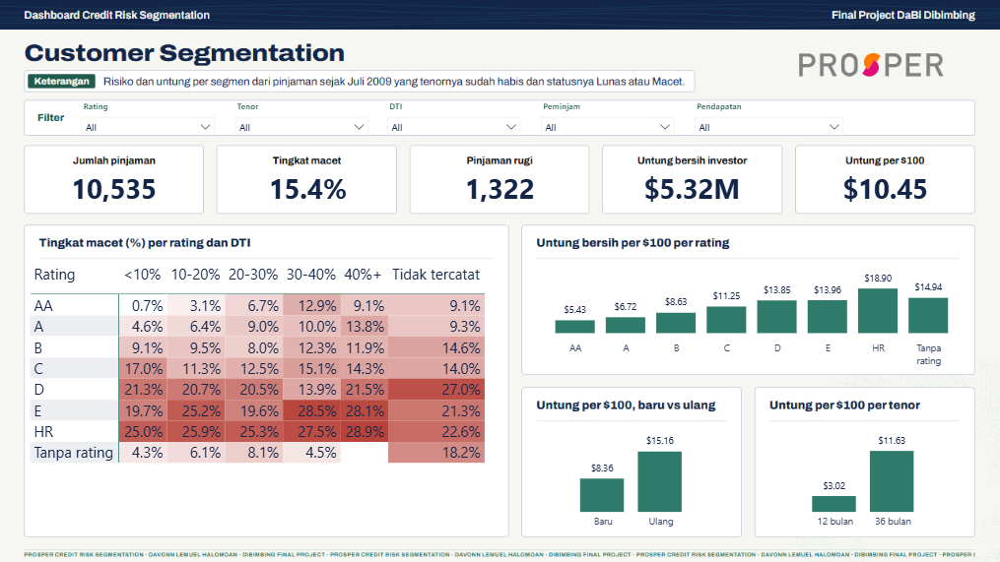
| Bagian | Isi |
|---|---|
| Data | 10.535 pinjaman matang dengan tingkat macet 15,4% |
| Fitur | 14 ciri profil peminjam (rating dan bunga tidak dipakai) |
| Pembagian | 80% latih dan 20% uji |
| Model | Random forest dengan 300 pohon |
Random forest membedakan risiko lebih baik dari rating Prosper.
Skor kredit dan tenor paling menentukan macet.
Pinjaman yang cair setelah 2009 lebih jarang macet (36,9% menjadi 16,3%), dan semua rating menghasilkan untung. Bunga sudah menutup kerugian, sehingga menolak peminjam bukan cara utama menambah untung.
Dilihat per satu segmen, semua untung. Untung terbesar dari rating HR berpendapatan $100.000+ ($27,09 per $100). Rugi hanya muncul di pasangan segmen, 3 dari 5 melibatkan DTI tidak tercatat.
Menolak 9 pasangan paling berisiko menghindari 529 macet, tapi untung investor turun $0,94 juta (−17,7%). Menolak 5 pasangan paling rugi hanya menambah $9.576 (+0,2%).
Sudah. Di semua rating, bunga lebih besar dari pokok yang hilang, sehingga investor untung $5,43 (AA) sampai $18,90 (HR) per $100.
Skor kredit dan tenor, lalu cicilan/pendapatan. Random forest (AUC 0,727) mengurutkan risiko lebih baik dari rating Prosper (0,688).
Kunci untung Prosper bukan menolak lebih banyak peminjam, melainkan menilai risiko lebih tajam di dalam rating.
| Materi | Tautan |
|---|---|
| Dataset | kaggle.com/datasets/henryokam/prosper-loan-data |
| Sejarah Prosper | en.wikipedia.org/wiki/Prosper_Marketplace |
| Profil Prosper | prosper.com/about |
| Foto gedung 221 Main Street | "221 Main, San Francisco" oleh Greg Robbins, CC BY-NC-SA 2.0 |
| Data bersih | prosper_clean.csv |
| Folder pengerjaan | Folder Google Drive Final Project |
 Python
Python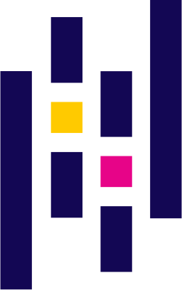
pandas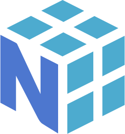
NumPy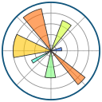
Matplotlib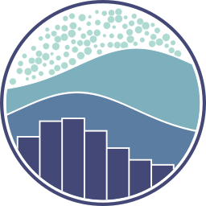
Seaborn PostgreSQLPower BIPython
PostgreSQLPower BIPython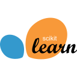
scikit-learnI'm interested in building a career as a Data Analyst, Data Scientist, Business Intelligence or Actuarial professional, turning operational data into business decisions.
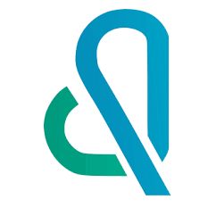
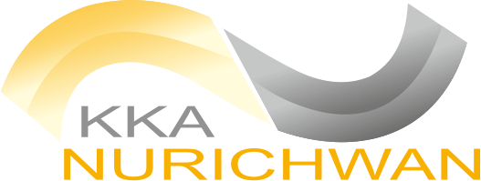
PythonSQLPower BI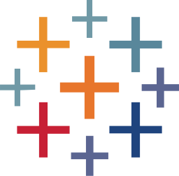
Tableau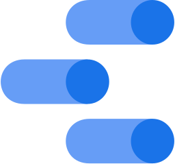
Looker Studio Excel
Excel10.005 pesanan dalam satu halaman. Denpasar dan Surabaya menyumbang 52% nilai pesanan.
Excel97.688 pesanan di Brasil. Pengiriman ke Alagoas telat 21,4%, São Paulo hanya 4,5%.
TableauSkor Recency, Frequency, Monetary di DAX membagi pelanggan Superstore jadi 11 segmen.
Power BIPremi yang turun setelah tahun tanpa klaim dan naik setelah klaim, diuji pada 14.505 pemegang polis.
Skripsi7.032 pelanggan. LightGBM jadi model terbaik; kontrak bulanan jadi pemicu churn utama.
LaporanDua peminjam dengan karakteristik yang cenderung mirip, tapi status akhirnya berbeda.
Sebelum macet, peminjam B sudah membayar bunga $1.395,51, lebih besar dari pokok yang hilang ($425,53). Investor tetap untung $920,82.
Karena itu, project ini juga menilai peminjam dari untung bersihnya, bukan hanya dari status macet atau lunas.
| Masalah | Jumlah | Tindakan |
|---|---|---|
| Pinjaman tercatat dua kali | 871 | Remove duplicate |
Status batal (Cancelled) | 5 | Dibuang |
| Tanggal tutup sebelum tanggal cair | 1 | Dibuang |
| Skor kredit bernilai 0 | 133 | Ganti jadi NA |
| Pendapatan tidak wajar | 410 | Ganti jadi NA |
| Outlier pendapatan (IQR) | 5.667 | Biarkan |
| Alasan | Kolom |
|---|---|
| Detail biro kredit yang sudah terwakili skor kredit dan DTI | 15 |
| Isi sama atau turunan kolom lain | 12 |
| Kosong lebih dari 80% | 8 |
ID tambahan, cukup ListingKey | 5 |
| Tidak terkait pertanyaan bisnis | 5 |
| Kolom baru | Rumus atau aturan |
|---|---|
net_return | Bunga diterima − biaya − pokok hilang |
is_bad | 1 kalau statusnya Macet |
is_matured | 1 kalau bulan sejak cair ≥ tenor |
is_resolved | 1 kalau Lunas atau Macet |
risk_grade | Rating Prosper; sebelum Jul 2009 pakai rating lama |
rating_era | Lama (sebelum Jul 2009) atau baru |
payment_to_income | Cicilan ÷ pendapatan per bulan |
dti_band, pti_band | DTI dan cicilan ÷ pendapatan dikelompokkan |
is_repeat_borrower | 1 kalau pernah pinjam di Prosper |
investor_fees | Biaya layanan + biaya penagihan |
status_group | 11 status → Lunas, Macet, Berjalan, Telat bayar |
orig_year, orig_quarter | Tahun dan kuartal cair |
purpose | Kode tujuan pinjaman → nama |
| Kode | purpose | Kode | purpose | Kode | purpose |
|---|---|---|---|---|---|
| 0 | Not Available | 7 | Other | 14 | Large Purchases |
| 1 | Debt Consolidation | 8 | Baby & Adoption Loans | 15 | Medical/Dental |
| 2 | Home Improvement | 9 | Boat | 16 | Motorcycle |
| 3 | Business | 10 | Cosmetic Procedures | 17 | RV |
| 4 | Personal Loan | 11 | Engagement Ring Financing | 18 | Taxes |
| 5 | Student Use | 12 | Green Loans | 19 | Vacation |
| 6 | Auto | 13 | Household Expenses | 20 | Wedding Loans |
Sumber: ProsperDataExport Specification v1.2.7, Prosper
Kedua perbedaan di Key Insight terbukti signifikan secara statistik, dengan \(\alpha\) = 5%.
H\(_0\): status pinjaman tidak berhubungan dengan periode cair.
H\(_0\): rata-rata untung bersih kedua periode sama.
Pinjaman cair 2009-2010 terbukti lebih jarang macet dan lebih menguntungkan investor.
Kebanyakan peminjam meminjam sekitar $6.300 untuk melunasi utang lain dan mencicilnya selama 3 tahun.
Merah: tingkat macet 20% ke atas
* Tenor 60 bulan tidak ditampilkan karena belum ada pinjaman 60 bulan yang tenornya habis.
Bunga tinggi di rating berisiko lebih dari cukup menutup kerugian dari pinjaman yang macet.